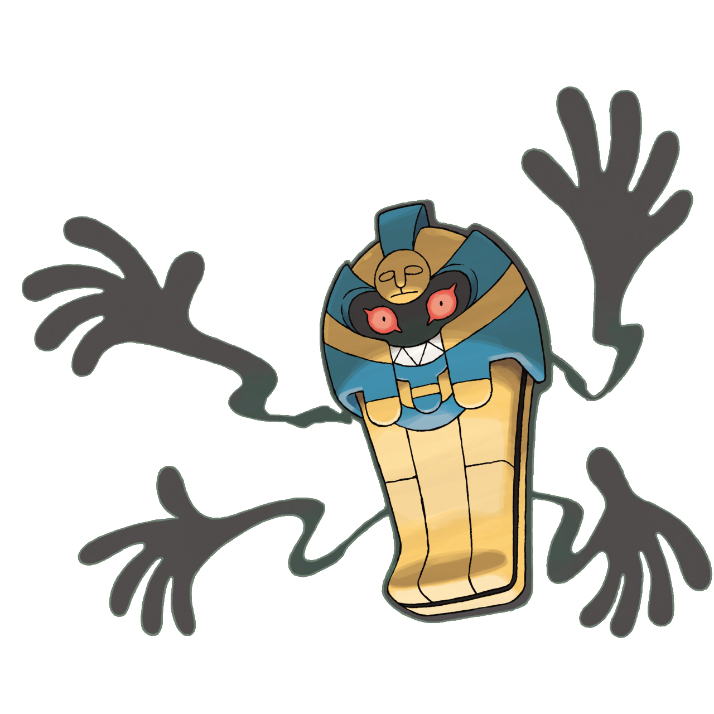

Torna alla Home

È risaputo che gli Yamask furono degli umani un tempo e, proprio per questo, mantengono alcuni dei ricordi della loro precedente vita. Ogni Yamask possiede la maschera funeraria dell'umano che fu un tempo. A volte Yamask osserva la sua maschera piangendo, probabilmente bramando la sua vita ormai passata. Gli Yamask vagano per le rovine di antichi cimiteri.(...)
Nel corpo, il quale ha tre sporgenze che gli donano una forma irregolare, ha due occhi minuscoli, i quali sono rivestiti ambedue da una circonferenza rossa con un puntino nell'angolo in basso a destra che ricorda vagamente una lacrima pronta a cadere.
(Fonte:
https://wiki.pokemoncentral.it/Yamask#Biologia )

Come si evince dalla descrizione, il tema è molto delicato e offre molti spunti di riflessione. Prima di tutto, ci fa pensare al tema della morte e alle sue conseguenze nella società, almeno in parte: la maschera infatti, per ovvie ragioni, sarà stata creata dai cari del defunto. Allo stesso tempo, però, mi chiedo chi mai vorrebbe infliggere a un proprio caro questa pena eterna, ossia di vedere il mondo da spettatore, tenendo tra le mani quello che rimane di te, totalmente inerte. Rimane l’evidente dubbio di come tutto ciò sia possibile chiaramente, in quanto Jamask a quanto pare è morto… ma allora chi è quello che tiene la maschera? È sempre lui o magari c’è sotto qualcos’altro? Tutte domande alle quali, ahimè, non è possibile dare una risposta. La storia ha però un risvolto positivo, infatti il pokémon, evolvendosi in Cofagrigus (vedi la foto qui sopra), “dimentica” quello che era un tempo e può finalmente far cadere quelle lacrime che si teneva incollato nella fase precedente. Personalmente, però, penso sia un finale amaro e non una reale vittoria, in quanto probabilmente questa è una sua mera illusione, dato che non è in grado di vedere la maschera a causa della sua fisionomia. Chissà cosa accadrebbe se un giorno lo scoprisse; probabilmente i mostri del passato farebbero il loro ritorno, e dunque una via d’uscita sarebbe impensabile per l’eternità.